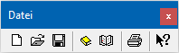

Die Buttonleiste "Datei" wird standardmäßig angezeigt und kann über das Menü "Anzeige" (Punkt "Toolbar" bzw. "Datei Toolbar" -> es darf kein Fenster geöffnet oder es muss die Formularliste aktiv sein) aktiviert bzw. deaktiviert werden.

In Abhängigkeit des aktiven Fensters im WinLine Formular Editor stehen folgende Funktionen zur Verfügung:
Ø Neu
Durch Anwahl des Buttons "Neu" kann ein neues Formular geschaffen werden, welches nichts auf ein bestehendes PDI verweist.
Achtung
Diese Art der Formularerstellung ist in der Regel nur für MDP Projekte notwendig. Ein neue Formular mit einem Verweis auf ein bestehendes PDI wird erzeugt, in dem ein bestehendes Formular mit diesem PDI geöffnet und ein "Speichern unter" durchgeführt wird.
Ø Öffnen
Mit Hilfe eines Auswahlfensters kann ein vorhandenes Formular geöffnet werden.
Ø Speichern
Das aktuell in der Bearbeitung befindliche Formular wird gespeichert.
Ø Neues Projekt
Über diesen Menüpunkt kann ein neues MDP-Projekt erstellt werden. MDP-Projekte dienen zum Transport von geänderten Formularen, können aber auch Scripte oder Fensteränderungen beinhalten. Nähere Information entnehmen Sie bitte dem Kapitel "MDP Projekt".
Hinweis
Damit ein MDP-Projekt am Ziel eingelesen werden kann, muss eine entsprechende Lizenz vorhanden sein.
Ø Projekt laden
Über diesen Menüpunkt kann ein bestehendes Projekt geöffnet werden, wo dann z.B. weitere geänderte Formulare hinzugefügt werden können. Nähere Information entnehmen Sie bitte dem Kapitel "MDP Projekt".
Ø Drucken
Der Inhalt aller aktivierten Flags wird am Standard-Drucker ausgegeben. Hierbei werden Variablen durch den Text "Testprint" ersetzt.
Ø Hilfe
Diese Funktion wird derzeit nicht unterstützt.